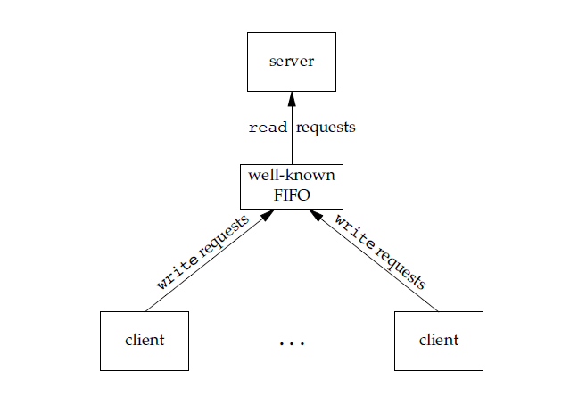
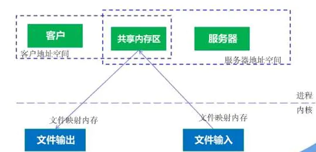

概论
操作系统的定义
操作系统（OS ）是管理计算机硬件与软件资源的计算机程序。
操作系统的功能
- 进程管理——进程线程的状态、控制、同步互斥、通信调度等
- 内存管理——分配/回收、地址转换、存储保护等
- 设备管理——设备驱动、分配回收、缓冲技术等
- 文件管理——文件目录、文件操作、磁盘空间、文件存取控制
操作系统的特征
- 并发性
并发性是两个或多个事件在同一时间间隔内发生的、同时处于活动状态的特性。 - 共享性
指系统中的资源可以被多个并发进程共同使用，内存中并发执行的多个程序可以共享计算机的硬件和软件资源。有两种共享方式：互斥共享和同时共享。 - 虚拟性
虚拟性是指将一个物理实体映射为一个或多个逻辑对象。主要有两种虚拟技术：时（时间）分复用技术和空（空间）分复用技术。 - 异步性
随机性也叫异步性，指的是每道程序在何时执行、各个程序执行的顺序以及每道程序所需的时间都是不确定的，也是不可预知的。
操作系统的分类
- 批处理操作系统
- 分时操作系统
- 实时操作系统
- 嵌入式操作系统
- 个人操作系统
- 网络操作系统
- 分布式操作系统
进程管理
进程与线程
进程
进程是正在运行的程序及其占用的系统资源，是系统进行资源分配、保护和调度的基本单位。
进程控制块 (Process Control Block, PCB) 描述进程的基本信息和运行状态，所谓的创建进程和撤销进程，都是指对 PCB 的操作。
线程
线程是独立调度的基本单位。
一个进程中可以有多个线程，它们共享进程资源。
QQ 和浏览器是两个进程，浏览器进程里面有很多线程，例如 HTTP 请求线程、事件响应线程、渲染线程等等，线程的并发执行使得在浏览器中点击一个新链接从而发起 HTTP 请求时，浏览器还可以响应用户的其它事件。
区别
- 拥有资源。进程是资源分配的基本单位，但是线程不拥有资源，线程可以访问隶属进程的资源。
- 调度。线程是独立调度的基本单位，在同一进程中，线程的切换不会引起进程切换，从一个进程中的线程切换到另一个进程中的线程时，会引起进程切换。
- 系统开销。由于创建或撤销进程时，系统都要为之分配或回收资源，如内存空间、I/O 设备等，所付出的开销远大于创建或撤销线程时的开销。类似地，在进行进程切换时，涉及当前执行进程 CPU 环境的保存及新调度进程 CPU 环境的设置，而线程切换时只需保存和设置少量寄存器内容，开销很小。
- 通信方面。线程间可以通过直接读写同一进程中的数据进行通信，但是进程通信需要借助 IPC。
程序的执行
程序的顺序执行
一个具有独立功能的程序独占处理器直至最终结束的过程称为程序的顺序执行。
顺序执行有如下三个特点：顺序性、封闭性、可在现性
并发执行的特性有以下三点：间断性、开放/交互性、不可再现性
程序的并发执行与并行执行：
并行是指多个事件在同一时刻发生，而并发是指多个事件在同一时期内发生。
并行是并发的特例，程序并行执行的硬件前提是系统中有多个 CPU。
并发的本质是一个 CPU 在多个程序运行过程中的时分复用。
进程的特征与控制
进程有以下特性：结构性、动态性、独立性、并发性
进程通常分为两类：系统进程和用户进程
进程上下文：进程的生命周期中，进程实体和支持进程运行的环境
进程状态及转换
就绪状态——进程在内存中已经具备执行的条件，等待分配 CPU。就绪队列
运行状态——进程占用 CPU 并正在执行。
阻塞状态——等待资源，也称为等待状态。阻塞队列
应该注意以下内容：
（1）只有就绪态和运行态可以相互转换，其它的都是单向转换。
（2）就绪状态的进程通过调度算法从而获得 CPU 时间，转为运行状态；而运行状态的进程，在分配给它的 CPU 时间片用完之后就会转为就绪状态，等待下一次调度。
（3）阻塞状态是缺少需要的资源从而由运行状态转换而来，但是该资源不包括 CPU 时间，缺少 CPU 时间会从运行态转换为就绪态。
新建状态——进程被创建时所处的状态。
终止状态——进程正常结束或出现严重错误时，会被操作系统终止或被其它有终止权的进程终止。
挂起就绪——进程具备运行条件，但目前不在内存中，需要被系统调入内存才能运行。
挂起阻塞——进程在等待某一事件或条件并且该进程目前不在内存中。
进程控制块 PCB
描述和控制进程运行的数据结构，PCB 是进程存在的唯一标志。
- 进程标识信息——内部标识符和外部标识符
- 现场信息——进程运行时 CPU 的即时状态即各寄存器的值
- 控制信息——操作系统控制进程需要的信息
进程控制
核心态（内核态）和用户态，也称为管态和目态
进程控制——系统对进程生命周期的各个环节进行控制
进程控制通常由原语完成。原语是由若干条指令所组成，用来实现某个特定功能，在执行过程中不可被中断的程序段。
原语是不可分割的执行单位，原语的执行不可能是并发的。
- 创建进程
- 撤消与终止进程
- 阻塞与唤醒进程
- 挂起与激活进程
进程的互斥与同步
并发运行的多个进程之间存在两种基本关系——竞争（互斥）和协作（同步）
- 同步：多个进程因为合作产生的直接制约关系，使得进程有一定的先后执行关系。
- 互斥：多个进程在同一时刻只有一个进程能进入临界区。
竞争，会引起一下两种极端情况：
- 死锁：一组进程均只占有部分所需资源而无法继续运行，陷入阻塞
- 饥饿：进程被调度程序长期忽视而分配不到 CPU 执行
临界资源与临界区
临界资源：在某段时间内只能允许一个进程使用的资源
临界区：访问临界资源的代码段
临界区调度原则：
- 一次至多一个进程能够进入临界区内执行；
- 如果已有进程在临界区，其它试图进入的进程应等待；
- 进入临界区内的进程应在有限时间内退出，以便让等待进程中的一个进入；
进程同步机制
信号量机制
P(s)：将信号量 s 的值减 1，若结果小于 0，则调用 P(s) 的进程被阻塞，并进入信号量 s 的阻塞队列中；若结果不小于 0，则调用 P(s) 的进程继续运行。
V(s)：将信号量 s 的值加 1，若结果不大于 0，则调用 V(s) 的进程从该信号量阻塞队列中释放、唤醒一个处于等待状态的进程，将其转换为就绪状态，调用 V(s) 的进程继续运行；若结果大于0，则调用V(s)的进程继续运行。
- P 操作意味进程申请一个资源，求而不得则阻塞进程，V 操作意味着释放一个资源，若此时还有进程在等待获取该资源，则被唤醒。
- 若信号量的值为正数，该正数表示可对信号量可进行的 P 操作的次数，即可用的资源数。信号量的初值一般设为系统中相关资源的总数，对于互斥信号量，初值一般设为 1。
- 若信号量的值为负，其绝对值表示有多个进程申请该资源而又不能得到，在阻塞队列等待，即在信号量阻塞队列中等待该资源的进程个数。
管程同步机制
把临界区集中并封装成抽象数据类型，其中包括与临界资源相关、仅限管程内部访问的公共变量，供管程外的进程调用以访问这些公共变量的接口过程，并提供互斥机制确保进程互斥地使用管程 。
管程具有以下特点：模块化、隐蔽性、互斥性
管程有一个重要特性：在一个时刻只能有一个进程使用管程。进程在无法继续执行的时候不能一直占用管程，否则其它进程永远不能使用管程。
管程引入了条件变量同步机制：
- 让进入管程却因资源不足而阻塞的进程暂时放弃管程控制权（开放管程），进入该条件变量的等待队列
- 条件变量只能在管程中通过两个原语操作——wait 原语和 signal 原语
- 一个进程已进入管程但无法继续执行，便在相应的条件变量 x 上调用 x.wait( )，将自己阻塞并移入 x 的等待队列中，放弃管程控制权（开放管程），另一进程可以通过对同一个条件变量执行 x.signal( ) 来唤醒之前在 x 上等待的进程
管程与进程的区别：
- 管程把共享变量上的同步操作集中起来，而临界区却分散在每个进程中；
- 管程是为管理共享资源而建立的，进程主要是为实现系统并发性而引入的；
- 管程被进程调用，管程和调用它的进程不能并行工作，而进程之间能并行工作，并发性是其固有特性；
- 管程是语言或操作系统的组成部分，随操作系统启动而装入内存，不必创建或撤销，而进程有生命周期；
进程同步经典问题
生产者-消费者问题
在并发环境下生产者、消费者进程访问缓冲区的速度不协调、不匹配——不同步，或者没有做到互不影响地使用、更新缓冲区——互斥，所以会出现运行错误甚至是死锁。
方案：因为缓冲区属于临界资源，因此需要使用一个互斥量 mutex 来控制对缓冲区的互斥访问。
为了同步生产者和消费者的行为，需要记录缓冲区中物品的数量。数量可以使用信号量来进行统计，这里需要使用两个信号量：empty 记录空缓冲区的数量，full 记录满缓冲区的数量。其中，empty 信号量是在生产者进程中使用，当 empty 不为 0 时，生产者才可以放入物品；full 信号量是在消费者进程中使用，当 full 信号量不为 0 时，消费者才可以取走物品。
读者-写者问题
- 允许多个读者进程同时读文件
- 只允许一个写者进程写文件
- 任何一个写者进程在完成写操作之前不允许其它读者或写者工作
- 写者执行写操作前，应让已有的写者和读者全部退出
方案：一个整型变量 count 记录在对数据进行读操作的进程数量，一个互斥量 count_mutex 用于对 count 加锁，一个互斥量 data_mutex 用于对读写的数据加锁。
1
2
3
4
5
6
7
8
9
10
11
12
13
14
15
16
17
18
19
20
21
22
23
24
25
26typedef int semaphore;
semaphore count_mutex = 1;
semaphore data_mutex = 1;
int count = 0;
void reader() {
while(TRUE) {
p(&count_mutex);
count++;
if(count == 1) p(&data_mutex); // 第一个读者需要对数据进行加锁，防止写进程访问
v(&count_mutex);
read();
p(&count_mutex);
count--;
if(count == 0) v(&data_mutex);
v(&count_mutex);
}
}
void writer() {
while(TRUE) {
p(&data_mutex);
write();
v(&data_mutex);
}
}哲学家就餐问题
五个哲学家围坐在一圆桌旁，桌中央有一盘通心面，每人面前有一只空盘子，每两人之间放一只筷子。每个哲学家的行为是思考，感到饥饿，然后吃通心面。为了吃面，每个哲学家必须拿到两只筷子，并且每个人只能直接从自己的左手边和右手边去取筷子。

为了防止死锁的发生，可以设置两个条件：
- 必须同时拿起左右两根筷子；
- 只有在两个邻居都没有进餐的情况下才允许进餐。
睡眠理发师
理发店里有一个理发师，一把理发椅，N 个供等候顾客休息的椅子。若无顾客，理发师躺在理发椅上睡觉。顾客到来时唤醒理发师，若理发师正在理发，新来的顾客坐在空闲的休息椅上等候，如果没有空椅子，顾客离开。
进程通信
进程同步与进程通信很容易混淆，它们的区别在于：
- 进程同步：控制多个进程按一定顺序执行；
- 进程通信：进程间传输信息。
进程通信是一种手段，而进程同步是一种目的。也可以说，为了能够达到进程同步的目的，需要让进程进行通信，传输一些进程同步所需要的信息。进程间通信的7种方式：管道（匿名管道）、有名管道、消息队列、信号、信号量、共享内存和套接字。
管道
管道/匿名管道是通过调用 pipe 函数创建的，fd[0] 用于读，fd[1] 用于写。
它具有以下限制：
- 只支持半双工通信（单向交替传输）
- 只能在父子进程或者兄弟进程中使用。
- 管道的缓冲区是有限的

管道的实质是一个内核缓冲区，进程以先进先出的方式从缓冲区存取数据，管道一端的进程顺序的将数据写入缓冲区，另一端的进程则顺序的读出数据。
该缓冲区可以看做是一个循环队列，读和写的位置都是自动增长的，不能随意改变，一个数据只能被读一次，读出来以后在缓冲区就不复存在了。
当缓冲区读空或者写满时，有一定的规则控制相应的读进程或者写进程进入等待队列，当空的缓冲区有新数据写入或者满的缓冲区有数据读出来时，就唤醒等待队列中的进程继续读写。
有名管道（FIFO）
FIFO克服了管道没有名字的限制，因此，除具有管道所具有的功能外，它还允许无亲缘关系进程间的通信。有名管道的名字存在于文件系统中，内容存放在内存中。
FIFO 常用于客户-服务器应用程序中，FIFO 用作汇聚点，在客户进程和服务器进程之间传递数据。

消息队列
消息队列是存放在内核中的消息链表，每个消息队列由消息队列标识符表示。消息队列允许一个或多个进程向它写入与读取消息。消息队列克服了信号承载信息量少，管道只能承载无格式字节流以及缓冲区大小受限等缺点。
相比于 FIFO，消息队列具有以下优点：
- 消息队列可以独立于读写进程存在，从而避免了 FIFO 中同步管道的打开和关闭时可能产生的困难；
- 避免了 FIFO 的同步阻塞问题，不需要进程自己提供同步方法；
- 读进程可以根据消息类型有选择地接收消息，而不像 FIFO 那样只能默认地接收。
信号
信号是Linux系统中用于进程间互相通信或者操作的一种机制，信号可以在任何时候发给某一进程，而无需知道该进程的状态。如果该进程当前并未处于执行状态，则该信号就有内核保存起来，直到该进程回复执行并传递给它为止。如果一个信号被进程设置为阻塞，则该信号的传递被延迟，直到其阻塞被取消是才被传递给进程。

Linux系统中常用信号：
- SIGINT：程序终止信号。程序运行过程中，按Ctrl+C键将产生该信号。
- SIGQUIT：程序退出信号。程序运行过程中，按Ctrl+\\键将产生该信号。
- SIGKILL：用户终止进程执行信号。shell下执行kill -9发送该信号。
信号是软件层次上对中断机制的一种模拟，是一种异步通信方式，信号可以在用户空间进程和内核之间直接交互，内核可以利用信号来通知用户空间的进程发生了哪些系统事件。
信号量
信号量是一个计数器，用于多进程对共享数据的访问，信号量的意图在于进程间同步。
信号量与普通整型变量的区别：
- 信号量是非负整型变量，除了初始化之外，它只能通过两个标准原子操作：wait(semap) , signal(semap) 来进行访问；
- 操作也被成为PV原语，普通整型变量则可以在任何语句块中被访问；
信号量与互斥量之间的区别：
- 互斥量用于线程的互斥，信号量用于线程的同步（根本区别）
- 互斥量值只能为0/1，信号量值可以为非负整数。
- 互斥量的加锁和解锁必须由同一线程分别对应使用，信号量可以由一个线程释放，另一个线程得到。
共享内存
使得多个进程可以可以直接读写同一块内存空间，是最快的可用IPC形式。
为在多个进程间交换信息，内核专门留出了一块内存区，可以由需要访问的进程将其映射到自己的私有地址空间。进程就可以直接读写这一块内存而不需要进行数据的拷贝，从而大大提高效率。
由于多个进程共享一段内存，因此需要依靠某种同步机制（如信号量）来达到进程间的同步及互斥。

套接字
套接字是一种通信机制，凭借这种机制，客户/服务器（即要进行通信的进程）系统的开发工作既可以在本地单机上进行，也可以跨网络进行。也就是说它可以让不在同一台计算机但通过网络连接计算机上的进程进行通信。

进程调度
两种基本的进程调度方式，抢占方式和非抢占方式，也称剥夺式（preemptive）和非剥夺式（non_preemptive）调度
进程调度模型
- 高级调度（High-Level Scheduling)，又称为作业调度，它决定把后备作业调入内存运行；
- 中级调度（Intermediate-Level Scheduling)，又称为平衡调度，在虚拟存储器中引入，在内、外存对换区进行进程对换；
- 低级调度 (Low-Level Scheduling)：又称为进程调度，它决定就绪队列的某进程获得CPU；

调度算法选择/评价准则
- 处理器利用率（CPU utilization）= CPU有效工作时间 / CPU总的运行时间
- 响应时间（response time）：交互环境下用户从键盘提交请求开始，到系统首次产生响应为止的时间
- 周转时间（turnaround time）Ti = Tf – Ts，即：周转时间 = 完成时刻 - 提交时刻
- 带权周转时间—— Wi = 作业的周转时间 Ti / 系统为作业提供的服务时间 Tsi，显然带权周转时间总大于 1
- 平均作业周转时间 T = (ΣTi) / n
- 平均作业带权周转时间W = (ΣWi) / n
调度算法
非抢占方式：先来先服务、短作业优先、高响应比优先
抢占方式：最短剩余时间优先、优先权、时间片轮转、多级反馈队列
- 先来先服务(First-Come First-Served，FCFS)——按进程就绪的先后顺序来调度，到达得越早，就越先执行。特点如下：获得CPU的进程，未遇到其它情况时，一直运行下去；是一种非抢占式算法；没有考虑执行时间长短、运行特性和资源的要求。
- 短作业优先(Shortest-Job-First，SJF)——以进入系统的作业所要求的CPU服务时间为标准，总选取估计所需CPU时间最短的作业优先投入运行。
- 最短剩余时间优先(Shortest Remaining Time First，SRTF)——若一就绪状态的新作业所需的CPU时间比当前正在执行的作业剩余任务所需CPU时间还短，SRTF将打断正在执行作业，将执行权分配给新作业。
- 高响应比优先(Highest Response Ratio First，HRRF)——是 FCFS 与 SJF 两种算法的折衷——既考虑作业等待时间，又考虑作业的运行时间，既照顾短作业又不使长作业等待过久，改善了调度性能，仍属于非抢占式算法。响应比为作业的响应时间与作业所需运行时间之比，简化为：响应比 ＝1 +（已等待的时间 / 估计运行时间）。
- 优先权(Highest-Priority-First，HPF)——根据进程的优先权进行进程调度，每次总是选取优先权高的进程调度，也称优先级调度算法，一般是抢占式调度。
- 时间片轮转(Round-Ribon，RR)——调度程序把CPU分配给进程使用一个规定的时段，称为一个时间片（如100ms），就绪队列中的进程轮流获得CPU的一个时间片。当一个时间片结束时，系统剥夺该进程执行权，等候下一轮调度，属于抢占式调度。
- 多级反馈队列(MFQS)——将时间片轮转与优先级调度相结合，把进程按优先级分成不同的队列，先按优先级调度，优先级相同的，按时间片轮转。优点是兼顾长短作业，有较好的响应时间，可行性强，适用于各种作业环境。
死锁
死锁产生的原因主要有两个：并发进程对临界资源的竞争；并发进程推进顺序不当。
必要条件
- 互斥条件：每个资源要么已经分配给了一个进程，要么就是可用的
- 请求与保持条件：已经得到了某个资源的进程可以再请求新的资源
- 不剥夺条件：已经分配给一个进程的资源不能强制性地被抢占，它只能被占有它的进程显式地释放
- 环路等待条件：有两个或者两个以上的进程组成一条环路，该环路中的每个进程都在等待下一个进程所占有的资源
处理方法
主要有以下四种方法：鸵鸟策略、
银行家算法的思路：
- 在某一时刻，各进程已获得所需的部分资源。有一进程提出新的资源请求，系统将剩余资源试探性地分配给该进程。
- 如果此时剩余资源能够满足余下的某些进程的需求，则将剩余资源分配给能充分满足的、资源需求缺口最大的进程，运行结束后释放的资源再并入系统的剩余资源集合。
- 反复执行第 2 步，直到所有的进程都能够获得所需而运行结束。说明第1步的进程请求是可行的，系统处于安全状态，相应的进程执行序列称为系统的安全序列。如果所有的进程都试探过而不能将资源分配给进程，即不存在安全序列，则系统是不安全的。
内存管理
MMU 内存管理单元，也称作分页内存管理单元，把虚拟地址转换成物理地址。TLB 是一块高速缓存，缓存虚拟地址和其映射的物理地址，减少CPU访问物理内存的次数，用于改进虚拟地址到物理地址转换速度。
内存管理概述
计算机的存储系统主要包括内存储器和外存储器
- 内存储器（Memory）即俗称的内存或主存
- 外存储器也叫辅助存储器
计算机存储系统的结构

地址的表示与地址转换
只有把程序和数据的逻辑地址转换为物理地址，程序才能正确运行，该过程称为地址转换或地址重定位。地址转换有静态重定位和动态重定位两种方式。
- 静态重定位：这种方式是在用户作业装入内存时由装入程序(装配程序)实现从逻辑地址到物理地址的转换，地址转换在作业执行前一次完成
- 动态重定位：程序执行过程中，CPU在访问程序和数据之前才实现地址转换。动态重定位必须借助于硬件地址转换机构来实现，硬件系统中设置了一个定位寄存器，当操作系统为某程序分配了一块内存区域后，装入程序把程序装入到所分配的区域中，然后把该内存区域的起始地址置入定位寄存器中。在程序执行过程中需要进行地址转换时，只需将逻辑地址与定位寄存器中的值相加就可得到物理地址。这种地址转换方式是在指令过程中进行的，所以称动态重定位。
内存管理的功能
- 内存的分配和回收
- 提高内存的利用率
- 通过虚拟存储技术“扩充”内存容量
- 内存信息保护
覆盖与交换技术
覆盖技术：按照程序自身的逻辑结构，让不同时执行的程序段先后共享同一块内存区域
例如：某程序由A、B、C、D、E、F等六个程序段组成，它们之间的调用关系如图3.3左图所示。其中，程序段A只调用B和C，程序段B只调用F，而程序段C只调用D和E。由于B和C之间没有相互调用，所以它们可以共享同一覆盖区。覆盖区的大小以能装入所有共享的程序段为准。本例中，与B、C对应的覆盖区的大小为50K。类似地，D、E、F也可以共享一大小为40K的覆盖区，如下图所示。
交换技术：由操作系统根据需要，将某些暂时不运行的进程或程序段从内存移到外存的交换区中；当内存空间富余时再给被移出的进程或程序段重新分配内存，让其进入内存
分区内存管理
- 单一连续内存管理
- 固定分区内存管理
- 可变分区内存管理
- 最先适应分配算法
- 循环首次适应分配算法
- 最优适应分配算法
- 最差适应分配算法
- 快速适应算法
页式存储管理
页：将用户进程的逻辑地址空间划分为大小相等的区，每一个区称为一页或一个页面，并对各页从 0 开始编号，如第 0 页、第 1 页等。
物理块：将物理内存也划分成与页大小相等的区，每一个区称为一个物理块(block)，或称为块、页框，也同样对它们加以编号，如 0 号块、1 号块等。
内存分配的基本单位是页，进程的最后一页经常装不满一块，所以会在最后一块内形成不可利用的碎片，称之为“页内碎片”。
32 位操作系统其逻辑地址是 32 位，采用页式内存管理，如果每页大小 4096 B，那么页内偏移要占用其逻辑地址的低 12 位，从 0 位开始到 11 位结束。逻辑地址剩余的高 20 位用来表示页号，从 12 位开始到 31 位结束，这样最多允许有 220（1M）个页面。页面的编号从 0 开始，分别为 0，1，2，3 …，220−1，如图所示。
快表
为了提高程序的运行速度，可以将最近访问过的页的页表项信息存放在高速缓存中，高速缓存也称为“联想存储器”，其中的页表称为“快表”。
多级页表
为了能够快速查找页表页在内存中的物理块号，为这些页表页再设计一个地址索引表，即页目录表。二级页表的逻辑地址被划分为三部分： 页目录、页表页、页内偏移
缺页中断指的是在进程运行过程中，发现所访问的页不在内存中时，CPU的内存管理单元发出的中断。与一般中断：CPU 检测中断时间不同，CPU 可多次处理。
缺页中断处理流程是：先查看内存是否有空闲块，若有则按该页在外存中的地址将该页找出并装入内存，在页表中填上它占用的块号且修改标志位。若内存已没有空闲块，则必须先淘汰已在内存中的某一页，再将所需的页装入，对页表和内存分配表作相应的修改。淘汰某页时，要查看该页的修改位来判断该页是否修改过，若该页在执行过程中没有被修改过，那么不必重新写回到存储器中，而已修改过的页调出时必须再将该页写回到外存中。
段式存储管理
分段式存储管理是以段为单位进行内存分配，逻辑地址空间是一个二维空间，分为段号和段内偏移两部分。
分段和分页的比较
- 段是信息的逻辑单位，由源程序的逻辑结构所决定，用户可见，段长可根据用户需要来规定，段起始地址可以从任何地址开始。在分段方式中，源程序(段号，段内偏移)经连结装配后仍保持二维结构。
- 页是信息的物理单位，与源程序的逻辑结构无关，用户不可见，页长由系统确定，页面只能以页大小的整倍数地址开始。在分页方式中，源程序(页号，页内偏移)经连结装配后变成了一维结构。
- 在分段式存储管理的基础上实现分页式存储管理，这就是段页式存储管理，是目前应用最多的一种存储管理方式。
逻辑地址分 3 个部分：段号、段内页号和页内位移，其形式为：对于用户来说，虚拟地址应该由段号 s 和段内位移 d’ 组成，用户看不到如何分页。而是由操作系统自动把 d’解释成两部分：段内页号 p 和页内位移 d，也就是说，d’ = p × 块长+ d。
虚拟存储技术
将作业不执行的部分暂时存放在外存，待到进程需要时，再将其从外存调入内存。将外存作为内存的补充，从逻辑上扩充内存。
虚拟存储技术的实现基础是内存的分页或分段管理，采用的是进程的分页或分段在内存与外存之间对换。
请求分页虚拟存储管理
硬件支持
- 请求分页的页表机制
- 缺页中断机构
- 地址转换机构
页面分配策略与页面调度算法
1.页面分配策略
通常分为固定分配和可变分配两种不同的方式
- 固定分配方式：
- 进程平均分配法
- 进程按比例分配法
- 进程优先权分配法
- 可变分配方式
2.页面调入策略
- 请求页（demand paging）调入
- 预先页（prepaging）调入
3.页面置换策略
- 全局置换
- 局部置换
页面置换算法
先进先出、最佳页面、最近最久未使用、时钟置换算法
先进先出（FIFO）页面置换算法
总是选择最先进入内存的页面或驻留时间最长的页面先淘汰

最佳（OPT）页面置换算法
在选择页面置换时应该考虑该页面将来使用的情况，将来最长时间不用的页面被淘汰。在进程采用固定页面分配的情况下，最佳页面置换算法具有最低的缺页率

LRU 页面置换算法
系统须维护一个页面淘汰队列，该队列中存放当前在内存中的页号，每当访问一页时就调整一次，使队尾总指向最近访问的页，而队列头部就是最近最少用的页，发生缺页中断时总淘汰队列头所指示的页；而执行一次页面访问后，需要从队列中把该页调整到队列尾
时钟（clock）置换算法
设备管理
设备管理概述
设备管理目标：
- 提高使用效率
- 提供便捷的界面
设备管理功能：
- 设备的分配与回收
- 缓冲区管理
- 设备控制和中断处理
- 实现虚拟设备
设备控制方法
程序循环查询方式
中断驱动方式
直接内存访问方式（DMA）
- 数据传输的基本单位是数据块
- 所传送的数据是从设备直接送入内存，或者直接读出内存的
- 在传输时CPU参与更少，仅在传送一个或多个数据块的开始和结束时，才需CPU干预，整块数据的传送是在控制器的控制下完成的
通道方式
I/O 通道方式是 DMA 方式的发展，它可进一步减少 CPU 的干预，即把对一个数据块的读(或写)为单位的干预，减少为对一组数据块的读(或写)及有关的控制和管理为单位的干预
缓冲技术
缓冲技术主要有以下作用：
- 改善中央处理器与外围设备之间速度不匹配的矛盾，提高 CPU 和 I/O 设备的并行性
- 减少 I/O 对 CPU 的中断次数和放宽对 CPU 中断响应时间的要求
- 协调逻辑记录大小与物理记录大小不一致的问题
输入输出软件
设备独立性，也称为设备无关性，是指在用户程序中不直接使用物理设备名（或设备的物理地址），而只能使用逻辑设备名。
- 使得设备分配更加灵活，提高了设备的利用率
- 可以实现 I/O 重定向
设备分配与回收
设备信息描述
- 系统设备表 SDT
- 设备控制表 DCT
- 控制器控制表 COCT
- 通道控制表 CHCT
设备分配策略
- 独占方式
- 共享方式
- 虚拟方式
SPOOLing 技术(假脱机)
当系统中引入了多道程序技术后，可以利用其中的一道程序，来模拟脱机输入输出时的外围控制机功能，把低速 I/O 设备上的数据传送到高速磁盘上；或者把数据从磁盘传送到低速输出设备上。这样，便可在主机的直接控制下，实现脱机输入输出功能。
- 提高了 I/O 的速度，缓和了高速的处理器与低速输入输出设备之间的矛盾
- 将独占设备改造为共享设备，提高了设备的利用率
- 实现了虚拟设备功能，将物理的单个设备变换为多个对应的逻辑设备
设备分配算法
- 先来先服务算法
- 优先级高者优先算法
文件系统
概述
文件分类方法有很多，下面是常用的几种文件分类方法：
- 按照文件的逻辑结构的不同，可以把文件分成流式文件和纪录式文件
- 按照用途将文件分为系统文件、库文件和用户文件
- 按照性质可以把文件分为普通文件、目录文件和特殊文件按照性质可以把文件分为普通文件、目录文件和特殊文件
文件的组织
逻辑结构组织
1.流式文件
流式文件指文件内的数据不组成记录，只是依次的一串信息集合，如字节流或字符流。流式文件本身可以没有结构。
2.纪录式文件
记录式文件是一种有结构的文件，它是指文件中的数据由若干条定长或不定长的记录构成，每条记录又由若干数据项构成。记录是记录式文件进行存取的基本单位。
按照组织方式的不同，记录式文件可进一步分为：
- 顺序文件
- 索引文件
- 索引顺序文件
物理结构组织
连续文件
链接文件
索引文件
直接文件
文件的存取方法
- 顺序存取
- 直接存取
- 按键存取
文件目录
文件目录的基本概念
文件控制块——用于描述和控制文件的数据结构，称之为文件控制块（File Control Block，FCB）
- 为了加快文件的查找速度，通常把 FCB 集中起来进行管理，文件控制块的有序集合称为文件目录
- 文件目录也是以文件的形式保存在外存上的，这就形成了目录文件
目录文件的组织
常用的组织方法主要有三种：
- FCB 线性表
- 索引节点
- 哈希表组织
目录的结构
目录结构都是采用层次结构，主要分为：
- 单级目录
- 二级目录
- 多级层次目录结构（最常用）
- 图状目录结构